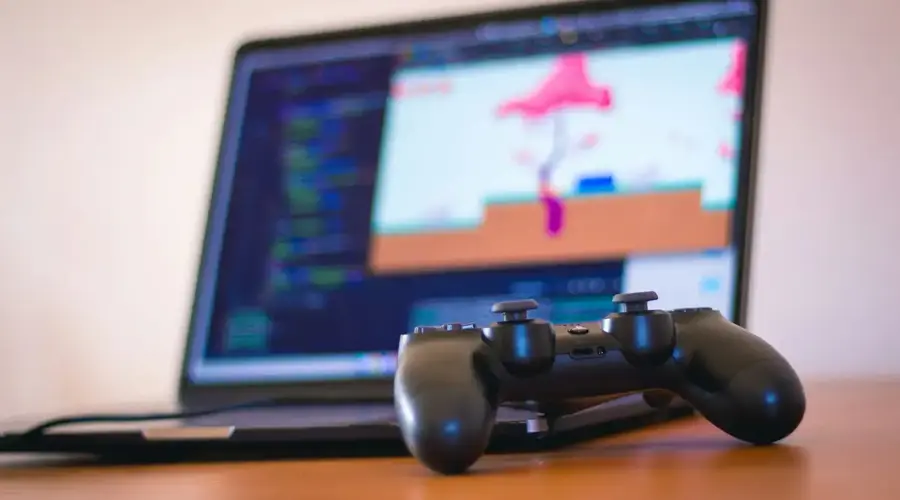

Introduction to Game Development
In recent years, the video game industry has been growing more and more, creating many opportunities to enter the world of game development. But what does game development entail exactly?
Game development refers to the process of creating video games that entertain, engage, and challenge players. It is not just about coding or graphics – it is about bringing an entire world to life. From creating an engaging narrative to designing characters, game development encompasses a wide range of skills and talents.
Photo by orva studio on Unsplash
Areas
Game development encompasses different areas such as:
- Coding
- Art
- User Interface
- Sound Design
- Storytelling
- Testing and Quality Assurance
These are a few examples of what you can do or pursue in game development, but there are a lot more things you can do.
Furthermore, with technology advancing, there are more possibilities that are available with game development. Especially with the continue development of virtual and artificial reality.
While there are many things that you can do with game development, it can be confusing to figure out where you want to start. Therefore, the best thing to do at the beginning is to figure out what you want to focus on, whether that be the more technical aspects of game development or the more artistic aspects. Choosing which area, you would like to focus on can help you figure out where you want to start. Thankfully, through the internet you can research and find tutorials to learn about whatever thing you would like. Making your own small project can help allow you to get some hands-on experience and therefore permit you to learn skills and practice them along the way.
Something crucial about game development is that it is a field where collaboration is key! Whether you are a programmer, writer, tester, it is important that you learn how to work with others since you all need to collaborate in order to create an engaging and fun game.